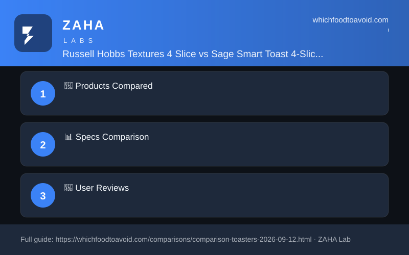

| Feature | Russell Hobbs Textures 4 Slice | Sage Smart Toast 4-Slice |
|---|---|---|
| Price | $32.99 | $159.95 |
| Rating | 4.1/5 | 4.4/5 |
| Key Feature 1 | Independent 2-slice operation | Motorised auto-lowering slots |
| Key Feature 2 | Frozen bread defrost setting | 'A Quick Look' mid-cycle toast check |
| Wattage/Power | 1500W | 1900W |
| Capacity | 4 slices | 4 slices |
| Warranty | 2 years (3 if registered online within 28 days) | 2 years |
Russell Hobbs buyers on AO.com praise the wide slots, quick toasting, and value for money, with a handful noting occasional uneven browning at lower dial settings. Sage Smart Toast owners consistently call the motorised mechanism and LED progress bar genuinely useful rather than gimmicky, and even browning across all bread types is by far the most praised outcome.
For the vast majority of UK households, the Russell Hobbs Textures 4 Slice at $32.99 delivers reliable, fuss-free toasting that is hard to argue with at the price. The Sage Smart Toast is a premium appliance that genuinely earns its rating — motorised slots, LED guidance, and superior browning consistency are real advantages — but the $127 gap is only justified if toast quality matters enough to you to spend more on a toaster than on a week's shopping.
Russell Hobbs Textures best for budget-conscious households, students, and families who want dependable everyday toasting without spending over the odds. Sage Smart Toast best for breakfast enthusiasts, home bakers, and anyone who wants precision browning, a premium kitchen centrepiece, and genuinely smart features that speed up the morning routine.
For most households, no — the Russell Hobbs makes perfectly good toast at a fraction of the price. But if you're a breakfast purist who values precise, consistent browning and premium engineering, the Sage's motorised mechanism and LED progress indicator are genuinely useful rather than gimmicky, and the 2-year warranty matches the Russell Hobbs.
Yes — both feature extra-wide slots that accommodate crumpets, thick-cut loaves, and baguettes. The Sage adds a dedicated crumpet setting, though reviewers note it needs a little adjusting on first use; the Russell Hobbs manages crumpets reliably via its standard browning dial.
The Russell Hobbs draws 1500W versus the Sage's 1900W, so it uses less power per cycle. The real-world cost difference for occasional toasting is minimal, but the Russell Hobbs also has an independent 2-slice mode that effectively halves energy consumption when you only need a couple of slices — a useful bonus for solo users.